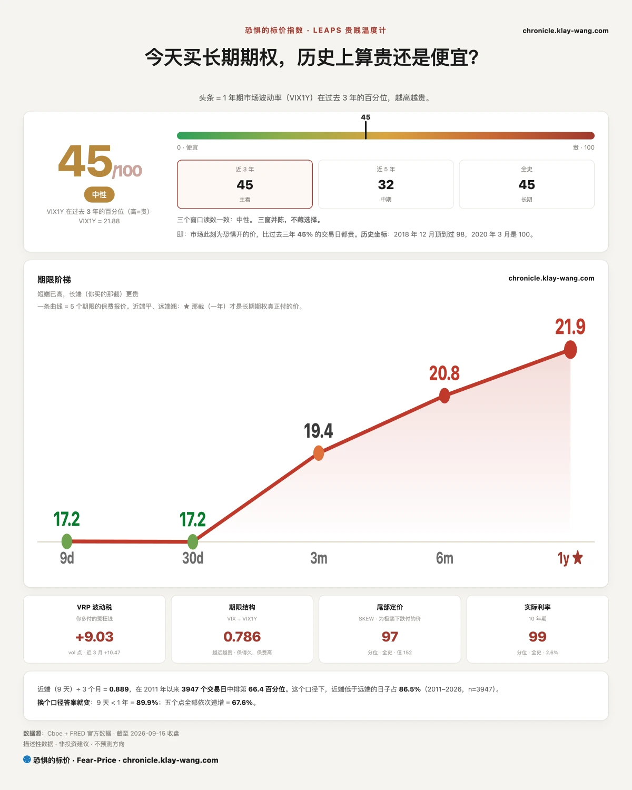
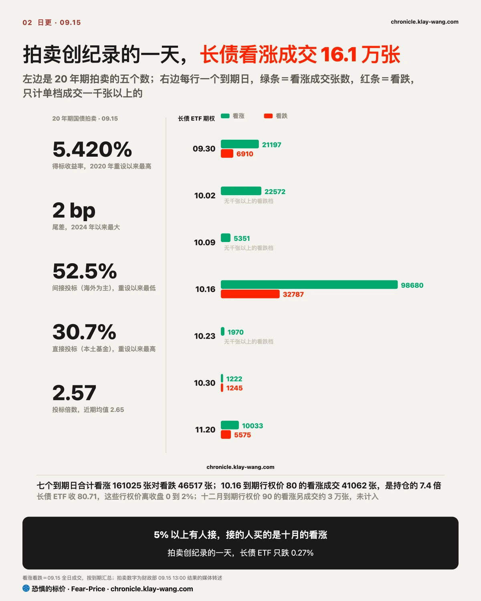
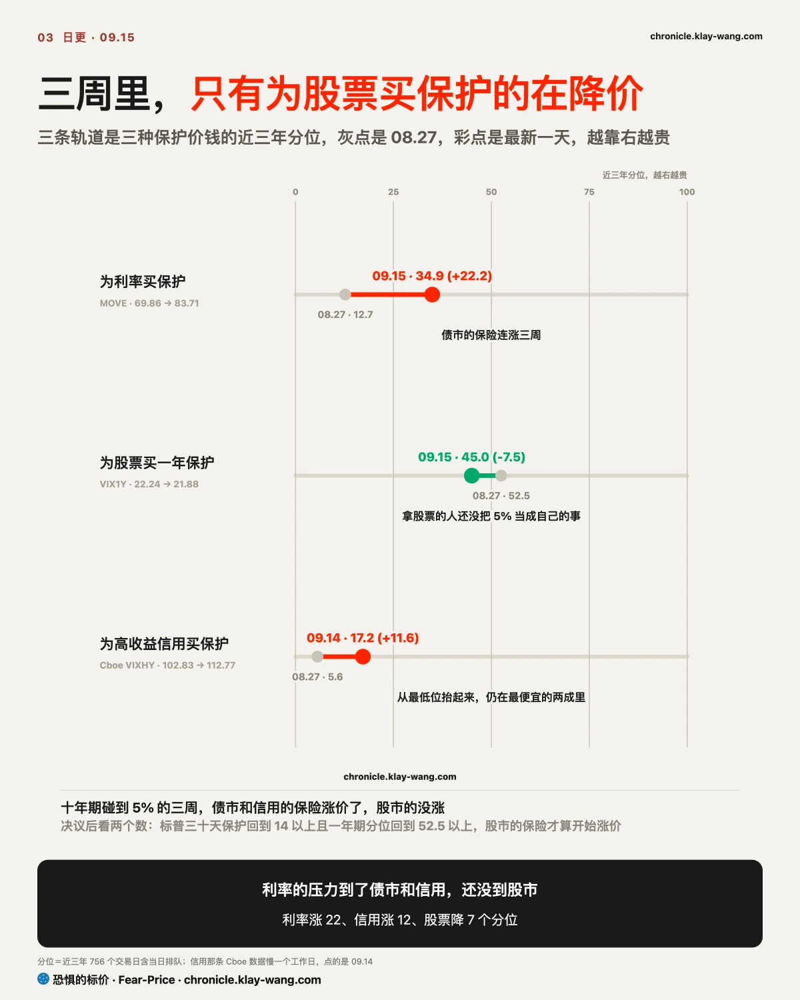
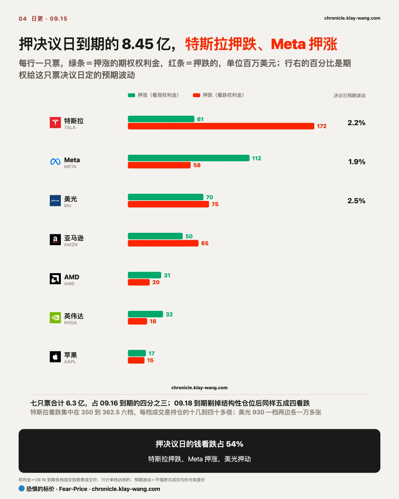
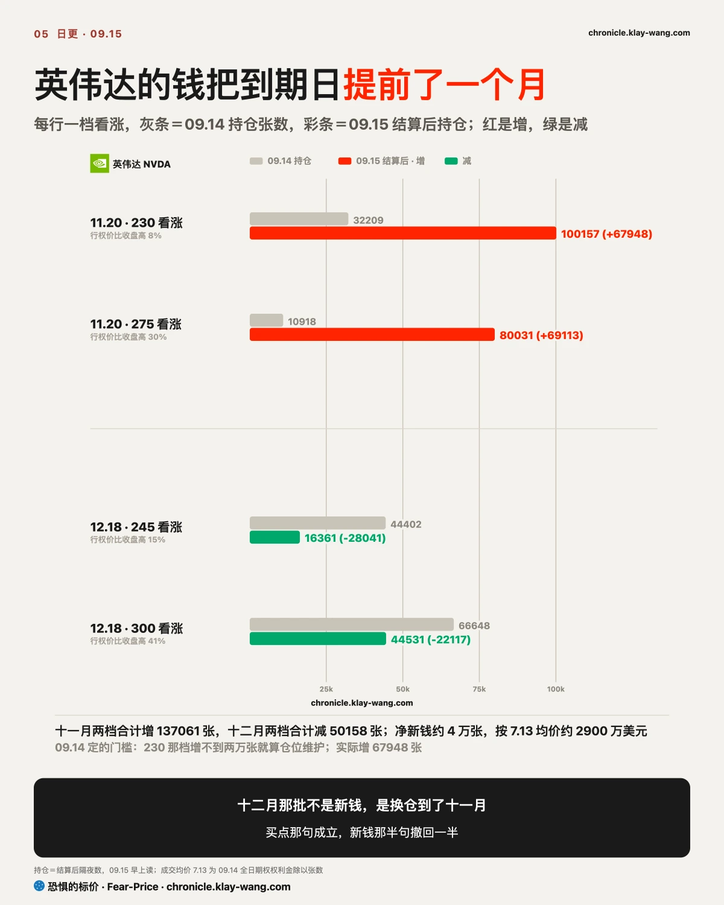

恐惧的标价指数（Fear-Price Index）· 2026-09-15 · 读数 45.0/100：一年期波动率 VIX1Y 为 21.88，处于近三年第 45.0 百分位，高即贵。逐日台账与口径 → chronicle.klay-wang.com · 转载注明：恐惧的标价指数 · Fear-Price
议息前一天，温度计一格没动。读数从 09.14 的 47.5 回到 45.0，一年期 21.88 比 09.14 低 0.09；五档里只有九天期涨了 0.30，到 17.21。
决议那一天的价在 09.11 那周已经付完，09.15 没有人再补。
几个表说的是同一件事：情绪指标在怕，期权价格没涨。CNN 恐贪 28.7，在 2011 以来的第 19 分位；为股票买保护的价钱不贵，VIX 17.2，一年期保护在近三年第 45 分位；两者相除的 K 指数 1.67，情绪比期权价格怕。
K 要跌破 1，才算怕到肯花钱买保护。按 09.15 的数，要么 VIX 涨到 28.7 以上，要么恐贪掉到 17 以下，两边都还远。
只有一种保护涨价。为极端下跌买保护的价钱 152.09，全史第 97.3 分位，比一年期保护贵出五十个分位，市场在为一次大跌买保险，怕的是决议之后的一次大跌，不是决议本身。为利率买保护的价钱（MOVE）83.71，近三年第 34.9 分位，比 09.14 低 0.19，是 09.08 以来第一次没涨，债市这边的保险涨价已经基本走完。
这套读数每天更新在两页上：chronicle.klay-wang.com/kindex 画着 2011 以来 39 次 K 破 1 之后的走势，中位数三个月涨 3%，六成四上涨；chronicle.klay-wang.com/fear-price 是温度计五档和三个分位窗口。决议日 K 会不会破 1，09.16 收盘后那两页就有答案。

拍卖越差、价格越没跌，09.15 的信息就在这个反差里。意思是收益率到了 5% 以上就有人接。20 年期国债发行前交易在 5.400%，得标 5.420%，比预期高 2 个基点，是 2024 年以来最大的尾差。
内部结构比尾差更难看。间接投标（海外央行与外国机构多走这条道，媒体拿它当海外需求的代理）52.5%，比上月的 62.9% 和近年平均的 68% 都低，是这个品种 2020 年重设以来最低；直接投标 30.7% 是重设以来最高，一级交易商被迫吃下 16.9%。海外买家退了一步，本土基金补了一步，补的价钱是比上月更高的 5.42%。
结果比预期差，公布之后长债却没有崩。长债 ETF 跳空 −0.37%，白天回 0.10%，收 −0.27%，成交量与 09.14 持平，收在全天区间的上六成；十年期盘中最高 5.045%，收盘回到 5% 下方。为长债买三十天保护的价钱涨 0.62 到 12.87，涨幅在 42 只标的里只排第 14。
期权那边有人在买它的上涨，付的是真金白银的期权权利金。十月到期的看涨成交 16.1 万张，是看跌 4.7 万张的三倍多；10.16 到期、行权价 80 的看涨成交 41062 张，是持仓的 7.4 倍。
10.02 到期的 81 和 82 看涨各成交 5987 和 10264 张，都是持仓的 4 倍上下。这些行权价离 80.71 的收盘只有 0 到 2%，两周到一个月内见分晓，09.16 结算后这批看涨留不留，是这笔钱押不押决议的第一个证据。
这批人赌的是决议之后长端利率回落。我的理解是：拍卖创纪录的一天没有把长债砸下去，是因为 5% 以上的收益率把新买家引了进来，期权里那批人赌的正是这个。
历史站在买的人这边。近 20 年以来十年期在 4% 以上时的 17 次加息，长债 ETF 三个月后中位涨 2.1%；2006 年 6 月那次十年期 5.20%，三个月后涨 8.7%。
决议后两天长债 ETF 收到 80 以下，且 10.16 那档看涨持仓 09.17 结算不到两万张，这一节收回。

决议前一天的板块顺序说明市场在按油价和利率涨来排座次，没有按衰退来排。能源 ETF 涨 2.16%，原油 ETF 涨 3.31%。公用事业跌 1.19%、必选消费跌 0.81%，加息前一天两个防守板块跌得比标普的 0.46% 多。
比特币 ETF 跌 3.64%、Coinbase 跌 10.10%，参议院 41 票否掉了加密市场结构法案的程序性投票。软件 ETF 跌 1.02%，比 09.14 涨的 5.04% 小得多。
十年期碰到 5% 的这三周，为利率和为信用买保护的人都在加价，为股票买保护的人在退。
为利率买保护的价钱从 08.27 的 69.86 涨到 83.71，近三年分位从 12.7 到 34.9，涨了 22 个分位，债市在为加息之后的利率路径买保险。
为高收益信用买保护的价钱（Cboe VIXHY）09.14 报 112.77，08.27 是 102.83，分位从 5.6 到 17.2，涨了 12 个分位。借钱最贵的那批公司，为它们的违约买保险的价钱从最低位抬起来，虽然抬完还在近三年最便宜的两成里。
为股票买一年保护的价钱同一段时间从 22.24 降到 21.88，分位从 52.5 降到 45.0，是三种保护里唯一在便宜的。09.15 智通财经转述的一篇华尔街分析把顺序写成债市波动先起、再传股市、再传信用利差，门槛在十年期 5.25%，过了那条线股债相关性转正，债不再对冲股。09.15 的数把顺序改了一下：信用比股票先动。
原因我认为有两条。单票相关性在历史低位，个股在各自的消息里涨跌，高通涨 4.25%、Coinbase 跌 10.10%，指数仅跌 0.46%，指数层面的波动被抵掉了，为指数买保护的人就不着急。第二条，标普离 08.13 的高点只有 2.8%，拿股票的人还没把 5% 当成自己的事。
一个对照能看出两边还没联动。09.14 半导体 ETF 跌 4.75% 那天，长债 ETF 收平，为利率买保护的价钱涨 1.69；09.15 长债拍卖创纪录的一天，半导体 ETF 收平，为股票买保护的价钱只涨 0.70。两天里债和股各跌各的，没有同一天一起跌，股债相关性还没转正就是这个样子；转正以后是同一天一起跌。
债不再对冲股这件事对拿股票的人最要紧：过去三年跌的时候债涨、股跌，一个组合里两边互相抵；十年期过了 5.25% 之后两边同跌，抵不掉，那时为股票买保护的价钱才会补涨。
拿股票的人要看的是：债和信用都已经为 5% 涨过保费，只有股票的保费还没涨。什么时候算涨？不用等华尔街说的 5.25%，看两个数就够，标普三十天保护回到 14 以上（09.15 是 13.91），一年期保护回到三周前的第 52.5 分位以上（09.15 是 45.0）。决议之后这两个数一起到了，就说明股票的保费也开始涨，这一节写的利率压力还没到股市，我得收回。

押决议日到期的钱以看跌为主。09.16 到期的期权成交 8.45 亿美元期权权利金，看跌占 54%；09.18 到期的 25.6 亿里，台积电 11.7 亿深度实值看涨和 SpaceX 3.7 亿深度实值看跌都是按内在价值成交的套利性质交易，不是押涨跌，剔掉之后剩 10.2 亿，看跌同样占 54%。
特斯拉一家 2.33 亿，看跌 1.72 亿占 74%，集中在 350 到 362.5 六档平值附近，每档成交都是持仓的十几倍到四十多倍。
Meta 1.70 亿里看涨占 66%，Meta 09.15 白天涨 1.66% 收 +0.70%，是七巨头里白天涨得最多的。美光 1.44 亿看涨看跌各半，930 那一档两边各一万多张，押的是波动幅度，不押涨跌。
这些价钱换算成决议日的预期波动，是拿票的人最该看的一个数。按成交均价，特斯拉 357.5 平值跨式 8.01 美元，占收盘价的 2.2%；美光 930 跨式 23 美元上下，占 2.5%；Meta 670 跨式 12.6 美元，占 1.9%。
标普 ETF 到 09.18 的预期波动 ±8.83 点，只有 1.16%。09.16 收盘落在这个幅度以内，卖保护的人赢；落在外面，买保护的人赢。

英伟达押十一月上涨的钱留下了，十二月那批是换仓过来的。09.15 早上的结算持仓把两件事一起说清了。
近月那头，09.16 到期的 212.5 看涨成交 86146 张，只花 1270 万美元，一天的赌注只有 09.14 押十一月那批的四分之一。
远端四档的结算持仓变化最大的是十一月。11.20 到期、行权价 230 的看涨从 32209 张增到 100157，增了 67948 张；同一到期的 275 看涨从 10918 到 80031。
十二月那两档是减的。12.18 到期的 245 看涨从 44402 掉到 16361，300 看涨从 66648 掉到 44531。
到期日从十二月提前到十一月，行权价从 245 压到 230，张数从四万四千翻到十万。十一月新增的 6.8 万张里约 2.8 万是从十二月挪过来的，净新钱约 4 万张，按 09.14 成交均价 7.13 美元算约 2900 万美元。
09.14 定的门槛是 230 那档持仓增不到两万张就算仓位维护，实际增了 6.8 万，买点那句成立；245 那档持仓掉到两万以下，关于新钱的半句要撤回一半。
这次换仓在我看来只有一种解释：拿着英伟达十二月看涨的人在 09.14 那天没有减仓，把到期日往前挪了一个月，压到 11.20，正好盖住三季报那一周，等于把赌注从年底提前到了财报周。09.15 230 看涨报 7.56，比 09.14 成交均价高 0.43，第一天没亏。拿英伟达的人可以这么看：这十万张看涨在 230 以下和你的股票同涨同跌，过了 275 他们的收益不再增加，你的还在。
11.20 前收盘回到 200 以下且 230 那档持仓 09.22 前掉一半，这一节作废。

上周和 09.14 立的五条，09.15 逐条对：
不给操作建议，只把 09.15 的价格换算成你能自己判断的东西。
手里有长债的：拍卖创纪录的一天长债 ETF 只跌 0.27%，十月到期的看涨成交是看跌的三倍多。近 20 年以来十年期在 4% 以上时的 17 次加息，长债 ETF 三个月后中位涨 2.1%。长债的下跌大半发生在这三周里，决议后要盯的是 80 这个位置守不守。
手里有半导体的：09.14 白天买回来的那批，09.15 缩量回落，没人追买也没人大量卖；为美光、闪迪、英特尔买一年保护的价钱连续两天便宜。近 20 年三轮首次加息后三个月费城半导体中位跌 18%，三轮末次加息后一年涨 35%，09.16 是第几次加息，比加不加重要得多。
手里有特斯拉的：市场给决议日定的价是 2.2%，1.72 亿看跌的六档盈亏平衡点在 348 到 354 之间。09.16 收盘在 354 以上，六档全在亏钱；收在 362.5 以上，全部归零，你的票什么都没发生。
手里有加密系的：Coinbase 跌 10.10%、MicroStrategy 跌 5.36%，法案 41 票被否，为 Coinbase 买三十天保护的价钱反而比 09.14 便宜了 1.82。投票这个事件过了，跌的是价，恐惧没跟着涨，这种跌法一般是仓位出清，不是新恐惧。
手里有股票、什么都没做的：三种保护里只有股票的在降价，拿股票的人还没为这轮利率上涨买过保险。决议后标普三十天保护回到 14 以上是第一个要看的数，一年期保护分位回到 52.5 以上是第二个。
什么都没拿在等进场点的：近 20 年 37 次加息，决议当天标普中位是跌的，三个月后六成上涨，一年后九成上涨。加息日 K 指数在恐惧区的那七次，三个月后七成上涨。等进场的人，历史上多半等来的是决议当天那一跌。